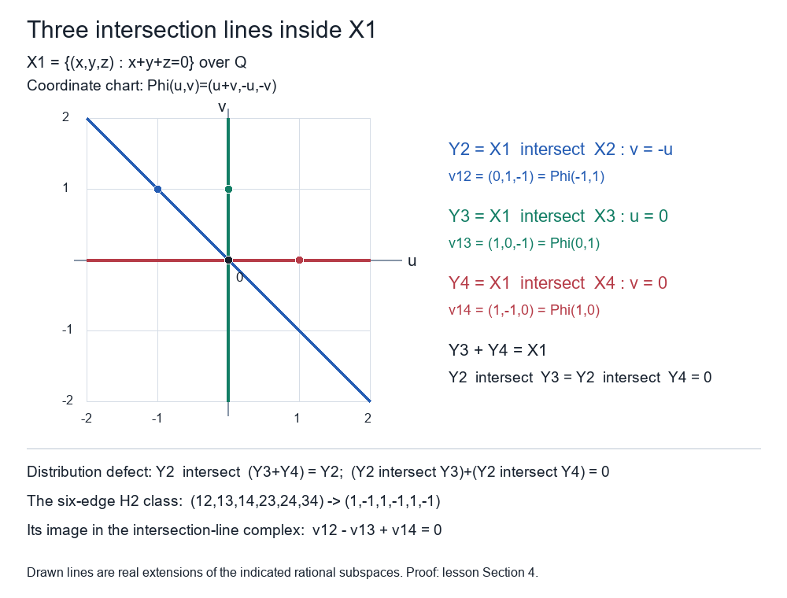

Draft lesson.
Intersection complexes and the full distributivity criterion
Original text and coordinate figure public domain (CC0).
A finite family of subobjects gives a complex whose boundaries are signed inclusions between their intersections. Its first homology measures a failure of intersection to distribute over a sum. Higher homology can detect a failure inside a recursively induced family of intersections even when every three-member subfamily behaves correctly. We keep the quantifier over all subfamilies throughout.
Let \(\mathcal A\) be an abelian category with the conventions of Universes and small categories. Use Kernels, cokernels and the abelian comparison, Sections 1–4 for the specified kernel, cokernel and image factorizations. Determinant signs and subset Koszul complexes, Sections 1 and 5 proves the integral line coefficients, signed homological complexes and entire ideal/cone triangles. The cohomological exactness and positive cone convention are those of Cohomology in abelian categories with translation, Sections 4–5.
1. Finite subobject operations and the needed quotient kernel
A subobject of \(X\) is a monomorphism into \(X\), considered up to its unique compatible isomorphism. Write \(A\le X\), with inclusion \(i_A\). The order \(A\le B\) means that \(i_A\) factors through \(i_B\); the factor is unique because \(i_B\) is monic. The intersection \(A\cap B\) is their pullback. Its map into \(X\) is monic: both pullback projections are monic by testing the pullback equations, and their composites with the given inclusions are monic. Its universal property says exactly that it is the greatest subobject contained in both. Iterating gives finite intersections, independently of parentheses; the empty intersection is \(X\).
The finite sum \(\sum_i A_i\) is the image of the map \(\bigoplus_iA_i\to X\) whose components are their inclusions. It contains each \(A_i\), by the image factorization. To prove it is their least common upper bound, suppose each inclusion factors through \(B\le X\). The quotient \(q_B:X\to X/B\) kills every component, hence kills the biproduct map. Write that map as \(ie\), where \(i\) is its image inclusion and \(e\) is epic. Then \(q_Bie=0\) gives \(q_Bi=0\), so \(i\) factors through \(B=\ker q_B\). Thus the image is contained in \(B\). The empty sum is zero. These meet and join universal properties give their associativity, commutativity, idempotence, absorption and monotonicity as subobject identities.
We used normality of monomorphisms and epimorphisms here. It follows directly from the abelian coimage–image axiom: for a monomorphism its kernel is zero, so the coimage is its source and its image inclusion is the original map under the specified isomorphism. The image is a kernel of its cokernel. Dually an epimorphism has its target as image, hence is the cokernel of its kernel. In particular a zero cokernel is equivalent to epicity. These conclusions use the actual structural maps.
For two subobjects, if \(P=A\cap B\) has projections \(u:P\to A\) and \(v:P\to B\), then
\[ 0\longrightarrow P\xrightarrow{(-u,v)}A\oplus B \xrightarrow{(i_A,i_B)}A+B\longrightarrow0 \tag{1.1} \]is exact. The last arrow is the epic image factor. A map with components \((a,b)\) is killed by the sum precisely when \(i_A(-a)=i_Bb\). The pullback then gives its unique factor through \((-u,v)\). This proves the middle kernel and every map in (1.1), including its signs.
We will also need that epimorphisms are stable under pullback. Here is an element-free proof. For an epimorphism \(f:A\to B\) and a map \(g:C\to B\), the pullback \(P\) is the kernel of the epic map \(r=(f,-g):A\oplus C\to B\). This map is epic because its restriction to the first summand is epic; normality makes it the cokernel of its kernel. If \(l:C\to T\) kills the pullback projection \(P\to C\), then \(l\pi_C\) kills that kernel, so equals \(tr\) for a unique \(t:B\to T\). Restricting to \(A\) gives \(tf=0\), hence \(t=0\). Restricting to \(C\) then gives \(l=0\). In particular the cokernel of \(P\to C\) is zero, so that projection is epic.
Lemma 1.1. For \(A,B\le X\) and \(D\le A\cap B\), the induced arrow \(A/D\to X/B\) has kernel
\[ \ker(A/D\longrightarrow X/B)\simeq (A\cap B)/D, \tag{1.2} \]with the map into \(A/D\) induced by the intersection inclusion.
Proof. Let \(Q=A/D\) and let \(K\to Q\) be the kernel of the displayed arrow. Pull it back along the epimorphism \(A\to Q\). Its projection onto \(K\) is epic by the preceding argument. The pullback object over \(A\) is the kernel of \(A\to X/B\), which is \(A\cap B\): a map into \(A\) is killed by the quotient exactly when its map into \(X\) factors through \(B\). The pullback property of the intersection gives the unique factor. Thus there is an epimorphism \(A\cap B\to K\). Its kernel is \(D\), because its composite with the monomorphism \(K\to Q\) is the quotient map restricted to \(A\cap B\), and \(D\) is already contained in that intersection. The abelian coimage–image comparison of this epimorphism gives (1.2), with its stated structural map. \(\square\)
2. The signed intersection complex and the deletion cone
Let \((X_s)_{s\in S}\) be a finite labeled family of subobjects of \(X\). For \(I\subseteq S\) put
\[ X_I=\bigcap_{s\in I}X_s,\qquad X_\varnothing=X, \qquad D_I=\det\mathbb Z^I. \tag{2.1} \]If \(I\subseteq J\), the intersection universal property supplies the unique inclusion \(X_J\to X_I\) over \(X\). Identities and compositions follow by uniqueness, so this is a contravariant subset diagram. The cited determinant theorem gives its homological complex
\[ K_n=\bigoplus_{\substack{I\subseteq S\\|I|=n}}X_I\otimes D_I, \qquad \partial_n\eta_J= \sum_{s\in J}\eta_{J\setminus\{s\}} \bigl(i_{J\setminus\{s\},J}\otimes\iota_s^J\bigr). \tag{2.2} \]Here \(\iota_s^J\) is the inverse of inserting \(e_s\) on the left of a determinant wedge. In ordered labels its coefficient is \((-1)^j\) for removal from position \(j\), starting at zero. Each two-removal path has its opposite partner and the same actual inclusion, proving square zero by the determinant theorem. The term \(K_0\) is \(X\), the boundary \(K_1\to X\) is the sum of the given inclusions, and therefore
\[ H_0(K)\simeq X/\sum_{s\in S}X_s. \tag{2.3} \]Write this complex as \(K(X;(X_s))\). All its negative terms are zero. Call the labeled family distributive if
\[ H_n\bigl(K(X;(X_s)_{s\in T})\bigr)=0 \quad\text{for every }T\subseteq S\text{ and every }n>0. \tag{2.4} \]Thus every subfamily of a distributive family is distributive. The empty family has only its ambient term in degree zero and satisfies (2.4). Relabeling preserves the complexes through the actual determinant bijections, hence preserves the property.
Choose \(t\in S\) and put \(S'=S\setminus\{t\}\). Let
\[ A=K(X;(X_s)_{s\in S'}),\qquad E=K(X_t;(X_t\cap X_s)_{s\in S'}). \tag{2.5} \]Their subset intersections agree with \(X_I\) and \(X_{I\cup\{t\}}\), respectively; for the empty subset the second ambient object is \(X_t\). Their inclusion maps give a chain map \(f:E\to A\), componentwise the inclusion \(X_{I\cup\{t\}}\to X_I\) with the same determinant factor.
Let \(B\) be the upper-ideal complex of subsets containing \(t\), whose quotient role is proved in the homological determinant theorem. Left insertion of \(t\) supplies an isomorphism
\[ \epsilon:E[1]\longrightarrow B, \qquad \epsilon_n=1\otimes w_t^I \quad (|I|=n-1). \tag{2.6} \]Our homological shift has \(E[1]_n=E_{n-1}\) and differential \(-\partial_E\). Removing another label \(s\) satisfies \(\iota_s w_t=-w_t\iota_s\); this follows by inverting the appropriate factor of the two-insertion identity in the determinant prerequisite. Hence \(\partial_B\epsilon=-\epsilon\partial_E\), giving precisely the chain equation for (2.6). Removing \(t\) instead satisfies \(\iota_t w_t=1\), so the cross component \(c_n:B_n\to A_{n-1}\) obeys \(c_n\epsilon_n=f_{n-1}\).
The ordered cone of \(f:E\to A\) has terms \(E_{n-1}\oplus A_n\) and differential \(\begin{pmatrix}-\partial_E&0\\f&\partial_A\end{pmatrix}\). The map
\[ \Omega_n:(C_f)_n\longrightarrow K_n, \qquad \Omega_n(e,a)=(a,\epsilon_ne) \tag{2.7} \]is a chain isomorphism to the lower/upper decomposition \(K_n=A_n\oplus B_n\): the ordered pairs specify maps on the two biproduct components. The cross equation is \(c_n\epsilon_n=f_{n-1}\), and the other changed equation is the anti-commutation just established. It preserves the inclusion of \(A\) and the positive projection onto \(E[1]\). Thus the full distinguished triangle is
\[ E\xrightarrow fA\xrightarrow jK\xrightarrow qE[1], \qquad q_n=\epsilon_n^{-1}\pi_B. \tag{2.8} \]The next arrow after rotation is \(-f[1]\). Reindexing homological degree \(n\) as cohomological degree \(-n\), the checked cohomological theorem gives the natural exact positions
\[ \cdots\longrightarrow H_n(E)\xrightarrow{H(f)}H_n(A) \xrightarrow{H(j)}H_n(K)\xrightarrow{H(q)}H_{n-1}(E) \xrightarrow{-H(f)}H_{n-1}(A)\longrightarrow\cdots. \tag{2.9} \]The minus on the last displayed map records the full rotation convention. It does not affect its kernel, and \(q\) retains the positive projection in (2.7).
3. The failure quotient and the full recursive criterion
Lemma 3.1. Assume the deleted complex \(A\) in (2.5) has zero homology in every positive degree. Put
\[ Z=\sum_{s\in S'}X_s,\qquad D=\sum_{s\in S'}(X_t\cap X_s). \tag{3.1} \]Then the projection in (2.8) gives natural isomorphisms
\[ H_n(K)\simeq H_{n-1}(E)\quad(n\ge2), \qquad H_1(K)\simeq (X_t\cap Z)/D. \tag{3.2} \]Proof. The positions on either side of \(H_n(K)\to H_{n-1}(E)\) in (2.9) are zero for \(n\ge2\). Thus that arrow is both monic and epic and hence is an isomorphism in \(\mathcal A\). At degree one the same sequence identifies \(H_1(K)\) with the kernel of \(H_0(E)\to H_0(A)\); its displayed negative has the same kernel. By (2.3), this map is the induced inclusion \(X_t/D\to X/Z\). Monotonicity puts \(D\) inside \(X_t\cap Z\), so Lemma 1.1 identifies its kernel with the last quotient in (3.2). This proves the actual quotient and all degree shifts. \(\square\)
Under the lemma's hypothesis, the whole complex \(K\) has zero positive homology if and only if \(E\) has zero positive homology and \(X_t\cap Z=D\). Indeed (3.2) tests each positive degree separately; a zero quotient of the inclusion \(D\to X_t\cap Z\) makes it epic as well as monic, hence identifies the two subobjects.
Theorem 3.2 (all-subfamily recursion). The family \((X_s)_{s\in S}\) is distributive if and only if all three conditions below hold:
- The deleted family \((X_s)_{s\in S'}\) is distributive in \(X\).
- The intersection family \((X_t\cap X_s)_{s\in S'}\) is distributive in \(X_t\).
- For every subset \(U\subseteq S'\),
Proof. Suppose the entire family satisfies (2.4). Every subfamily not containing \(t\) gives condition 1. For an arbitrary \(U\subseteq S'\), apply Lemma 3.1 to the family labeled by \(\{t\}\cup U\), whose deleted complex has zero positive homology by condition 1. Its whole complex also has zero positive homology by (2.4). The equivalence following that lemma shows that the intersection complex for \(U\) has zero positive homology and that (3.3) holds for this particular \(U\). Doing this for every \(U\) proves both condition 2 and condition 3, with their full quantifiers.
Conversely suppose conditions 1–3 hold. Take any \(T\subseteq S\). If \(t\notin T\), condition 1 supplies its required vanishing. If \(t\in T\), put \(U=T\setminus\{t\}\). Condition 1 supplies the deleted-complex hypothesis of Lemma 3.1, condition 2 supplies every positive homology vanishing of its intersection complex, and condition 3 supplies the corresponding zero failure quotient. The lemma proves every positive homology vanishing for this \(T\). Thus (2.4) holds. The choice \(U=\varnothing\) is included: both sides of (3.3) are zero and the intersection complex has only its degree-zero ambient term. \(\square\)
4. Size bounds, small families and the four-plane counterexample
For \(m=|S|\ge2\), the two highest degrees of \(K\) have zero homology. The top boundary from \(X_S\otimes D_S\) has, for each deleted label, an inclusion into a facet intersection with an invertible determinant coefficient. Each such component is monic, so the whole top boundary is monic and \(H_m(K)=0\).
Here is the complete argument for \(H_{m-1}(K)=0\). Fix an order of \(S\), choose its top determinant generator \(\omega\), and use \(\iota_t\omega\) as the generator of the facet coefficient line for each \(t\). Let \(Z\) be the kernel of the next boundary, and let \(z_t:Z\to X_{S\setminus\{t\}}\) be its components in these normalized facet generators. At a codimension-two face obtained by deleting \(s,t\), the two inverse-wedge coefficients are opposites. The kernel equation therefore says that the two maps \(z_s,z_t\) become equal after inclusion into that face intersection, hence after inclusion into \(X\). All facet components thus have one common composite \(z:Z\to X\). For each label \(s\), choose a different label \(t\), possible because \(m\ge2\); the facet \(S\setminus\{t\}\) contains \(s\), so \(z\) factors through \(X_s\). The intersection universal property gives a unique \(Z\to X_S\). Monicity of every facet inclusion makes its composites exactly the \(z_t\). Thus the kernel inclusion into \(K_{m-1}\) factors through the top boundary, whose image already lies in that kernel by square zero. The two subobjects are equal, proving \(H_{m-1}(K)=0\).
Consequently the only possibly nonzero positive degrees satisfy \(1\le n\le m-2\). For \(m=1\), the sole positive boundary is the given monomorphism \(X_1\to X\), so all positive homology is zero. For \(m=0\), all positive terms are zero. Degree-zero homology is always (2.3), including these small cases. In particular an ambient \(\mathbb Q\) with its single zero subobject has \(H_0=\mathbb Q\); an unqualified bound that removes degree zero for a singleton is false.
Every family with at most two members is therefore distributive: each of its subfamilies has zero positive homology by the same bounds. Theorem 3.2 for three members then gives
\[ (X_1,X_2,X_3)\text{ distributive} \quad\Longleftrightarrow\quad X_1\cap(X_2+X_3)=(X_1\cap X_2)+(X_1\cap X_3). \tag{4.1} \]Both the deleted and the intersection families have at most two members, so the only nontrivial subset identity is the one displayed. The inclusion from right to left always holds by monotonicity. The reverse inclusion is therefore an equivalent test. Once it holds, the family is distributive and Theorem 3.2 gives the analogous identities with either other distinguished member as well.
Counterexample 4.2. In \(X=\mathbb Q^3\), take
\[ X_1=\{x+y+z=0\},\quad X_2=\{x=0\},\quad X_3=\{y=0\},\quad X_4=\{z=0\}. \tag{4.2} \]Any two distinct planes in this list sum to \(X\). For each ordered triple \(i<j<k\), the two lines \(X_i\cap X_j\) and \(X_i\cap X_k\) are distinct and span the plane \(X_i\): their triple intersection is zero, since each relevant three defining equations force all coordinates to vanish. Thus all four identities \(X_i\cap(X_j+X_k)=(X_i\cap X_j)+(X_i\cap X_k)\) hold. The lines \(X_1\cap X_2,X_1\cap X_3,X_1\cap X_4\) also span \(X_1\), so
\[ X_1\cap(X_2+X_3+X_4) =(X_1\cap X_2)+(X_1\cap X_3)+(X_1\cap X_4). \tag{4.3} \]Nevertheless the four-member family is not distributive. Choose the six pair-intersection generators
\[ v_{12}=(0,1,-1),\quad v_{13}=(1,0,-1),\quad v_{14}=(1,-1,0), \quad v_{23}=e_3,\quad v_{24}=e_2,\quad v_{34}=e_1. \tag{4.4} \]All triple intersections are zero, so \(K_3=K_4=0\). The differential \(K_2\to K_1\) sends a pair vector \(v_{ij}\) to its negative in the \(i\)-th summand and its positive in the \(j\)-th. For pair coefficients \((a_{12},a_{13},a_{14},a_{23},a_{24},a_{34})\), its zero equation at the first plane gives \(a_{14}=a_{12}\) and \(a_{13}=-a_{12}\). At the second it gives \(a_{24}=a_{12}\) and \(a_{23}=-a_{12}\). At the third it gives \(a_{34}=a_{13}=a_{23}\). The fourth equation is then automatic. Hence its complete kernel is the line
\[ (a_{12},a_{13},a_{14},a_{23},a_{24},a_{34}) =t(1,-1,1,-1,1,-1). \tag{4.5} \]There are no incoming boundaries from degree three. This proves \(H_2(K)\simeq\mathbb Q\), with the displayed actual cycle. The other dimensions follow as well: \(\dim K_0=3\), \(\dim K_1=8\), \(\dim K_2=6\); the first boundary is epic because the planes span \(X\), and the second has rank \(5\). Thus \(H_0=H_1=0\), \(H_2=\mathbb Q\), and all other homology is zero.
The missing recursive condition is visible inside \(X_1\). Its three lines have pairwise zero intersections, whereas any two span \(X_1\). In the chart \(\Phi(u,v)=(u+v,-u,-v)\), their generators have coordinates \((-1,1),(0,1),(1,0)\), and \(v_{12}-v_{13}+v_{14}=0\). The intersection family fails (4.1). The deleted coordinate-plane family is distributive: for a distinguished coordinate plane, the two remaining pair intersections span it, so (4.1) applies. Every subset identity (3.3) at \(X_1\) holds here, because pairs of coordinate planes sum to \(X\) and the corresponding two lines span \(X_1\); singleton and empty subsets are tautological. Theorem 3.2 still detects the failure through its separate intersection-family condition. Checking the four triple identities and (4.3) alone would miss it.

Figure 1. The drawn lines are real extensions of the rational subspaces in (4.2). The chart and marked generators are exactly those above; the horizontal and vertical lines span the plane, while each meets the diagonal line only at zero. The six-edge cycle (4.5) maps to their relation \(v_{12}-v_{13}+v_{14}=0\). Equations (4.2)–(4.5) retain the full algebraic argument. The reproducible SVG source records the same coordinates and labels.

5. Ambient changes and a full ambient member
Suppose the family consists of subobjects of \(Y\le X\). For a nonempty subset of labels, its intersection computed in \(Y\) is the same subobject as its intersection in \(X\). Indeed equality after the monomorphism \(Y\to X\) is equivalent to equality inside \(Y\), so the two pullback universal properties agree; iterate for finite intersections. Thus the two complexes agree in every positive degree, and their degree-one boundaries differ only by postcomposition with \(Y\to X\). Monicity preserves that kernel. Their incoming boundaries agree, so \(H_1\) agrees as well as every higher homology object. Their degree-zero homologies are \(Y/\sum X_s\) and \(X/\sum X_s\), respectively. Therefore distributivity of the family is independent of either ambient choice containing it.
If \(X_t=X\) for some label, the deleted and intersection complexes in (2.5) coincide and \(f\) is their identity. The whole complex is the identity cone through (2.7). In its ordered form \((C_1)_n=A_{n-1}\oplus A_n\), the maps \(h_n(e,a)=(a,0)\) into \((C_1)_{n+1}\) give
\[ \partial_{n+1}h_n(e,a)=(-\partial a,a),\qquad h_{n-1}\partial_n(e,a)=(e+\partial a,0). \tag{5.1} \]Their sum is \((e,a)\). This is an actual contraction, transported through (2.7), so the whole complex has zero homology in every degree. It does not assert distributivity of every other subfamily; Exercise 3 makes that distinction concrete.
All the constructions are compatible with maps of labeled families. An ambient map whose given restrictions carry each \(X_s\) into the corresponding target subobject restricts to every finite intersection by its universal property. Its diagram maps commute with the signed inclusions and determinant factors, so give chain maps by (2.2). The same restrictions commute with \(f,\epsilon,\Omega,j,q\) in the deletion construction. The long exact sequence and the identifications (3.2) are therefore natural under these maps by the checked cohomological theorem and Lemma 1.1's universal construction. No elementwise lifting or projective-object assumption has entered these arguments.
6. Four graded exercises with complete solutions
Exercise 1 (signed integer intersections). Take the subgroups \(2\mathbb Z,3\mathbb Z\le\mathbb Z\). Compute their entire intersection complex, with free generators, and give its homology.
Solution. Their intersection is \(6\mathbb Z\) and their sum is \(\mathbb Z\), since \(-2+3=1\). Using the generators \(6,2,3,1\) and the determinant order \(1<2\), the complex is
\[ \mathbb Z\xrightarrow{(-3,2)^{\mathrm t}}\mathbb Z^2 \xrightarrow{(2,3)}\mathbb Z \tag{6.1} \]in homological degrees \(2,1,0\). The pair generator maps to \(-6\) in the first subgroup and \(+6\) in the second, explaining both entries. The left arrow is monic. The right arrow is epic by Bezout, and its kernel consists of \((-3t,2t)\), by the equation \(2a+3b=0\). Hence every homology group is zero. An actual contraction is \(h_0(c)=(-c,c)\) and \(h_1(a,b)=-a-b\). We have \(\partial_1h_0=1\), \(h_1\partial_2=1\), and \(\partial_2h_1+h_0\partial_1=1\) by direct multiplication of the displayed matrices.
Exercise 2 (three lines). In \(\mathbb Q^2\), let \(A=\mathbb Q(1,0)\), \(B=\mathbb Q(0,1)\), \(C=\mathbb Q(1,1)\). Compute the homology of their intersection complex and its distribution defect.
Solution. Distinct pair intersections are zero, so every term of degree at least two is zero. The degree-one boundary is \(\mathbb Q^3\to\mathbb Q^2\), \((a,b,c)\mapsto(a+c,b+c)\). It is epic, and its kernel consists of \(t(-1,-1,1)\). Thus \(H_0=0\), \(H_1=\mathbb Q\) with this generator, and higher homology is zero. Since \(B+C=\mathbb Q^2\), the left side of \(A\cap(B+C)\) is \(A\), whereas \((A\cap B)+(A\cap C)=0\). The failure quotient in (3.2) is \(A\), in agreement with the nonzero degree-one homology. The deleted two-line complex satisfies the lemma's hypothesis by Section 4.
Exercise 3 (whole-complex exactness). Adjoin the full ambient plane to the three lines of Exercise 2. Is the new whole complex exact? Is the four-member labeled family distributive?
Solution. Distinguished deletion at the new ambient member gives an identity map from the old complex to itself, so the new whole complex is its identity cone. Formula (5.1), transported by (2.7), contracts it. Consequently its homology is zero in every degree, including degree zero. But its original three-line subfamily has nonzero \(H_1\) by Exercise 2. The quantifier in (2.4) fails, so the four-member family is not distributive. This is an explicit exact whole complex whose subfamily obstructs the family property.
Exercise 4 (the actual higher class). For the four planes in (4.2), compute the image of the cycle (4.5) under the deletion projection with distinguished label \(1\). Show that the resulting class in the three-line complex is nonzero.
Solution. The upper part in homological degree two consists of the pair labels \(12,13,14\). Since \(1\) is the first label in the chosen determinant order, left insertion \(e_1\wedge e_j\) introduces no extra coefficient. The projection \(q_2\) in (2.8) therefore takes the six-edge coefficients \((1,-1,1,-1,1,-1)\) to the line coefficients \((1,-1,1)\), whose degree-one boundary inside \(X_1\) is \(v_{12}-v_{13}+v_{14}=0\). The three lines have pairwise zero intersections, so the degree-two term of their complex is zero and this nonzero cycle has no incoming boundary. It generates their one-dimensional \(H_1\). The deleted coordinate-plane family is distributive by the three-member criterion in Section 4, so Lemma 3.1 makes this very projection an isomorphism \(H_2(K)\to H_1(E)\). This identifies the class and its positive projection sign, rather than only comparing dimensions.
References
- Kernels, cokernels and the abelian comparison, Sections 1–4, for the structural kernel, image and quotient conventions. Section 1 above proves every extra pullback and quotient-kernel property used here.
- Determinant signs and subset Koszul complexes, Sections 1 and 5, for determinant coefficients, signed subset boundaries and the entire homological cone theorem.
- Cohomology in abelian categories with translation, Sections 4–5, for complete natural exactness and the cone connecting conventions.